Recycling
Recycled your armor and your tools.
About
Recycling is a datapack that lets you recycle old armor, tools and various equipment by smelting them in a Furnace or Blast Furnace to recover part of their original materials.
Instead of throwing away damaged or unused gear, you can transform it back into valuable resources such as Iron Ingots, Gold Ingots, Diamonds, Netherite Scraps and more, making every piece of equipment useful again.
Designed to stay faithful to vanilla Minecraft, Recycling integrates seamlessly with existing mechanics, encourages smarter resource management and rewards players for making the most of their materials without disrupting game balance.
Features
Custom Recipes
Adds new crafting recipes for blocks, items and useful resources.
Vanilla Friendly
Designed to fit naturally into Minecraft progression.
Recipes
All Recipes
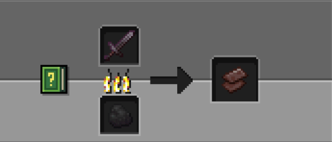
Netherite
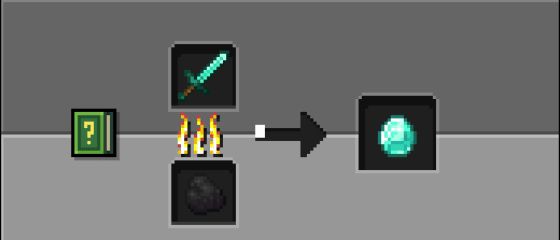
Diamond
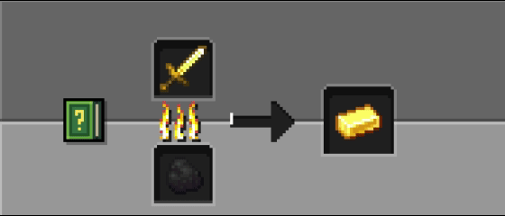
Gold
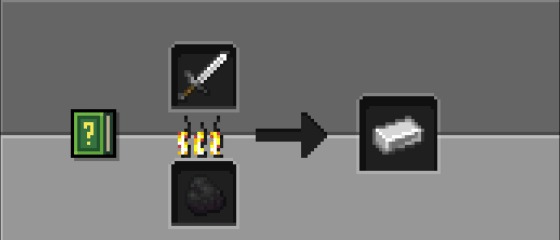
Iron
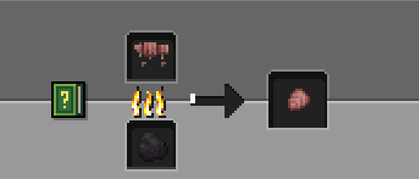
Armadillo Scute
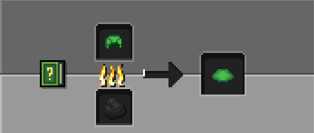
Turtle Scute
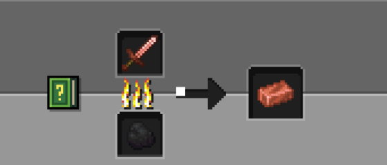
Copper
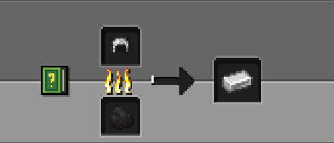
Chainmail
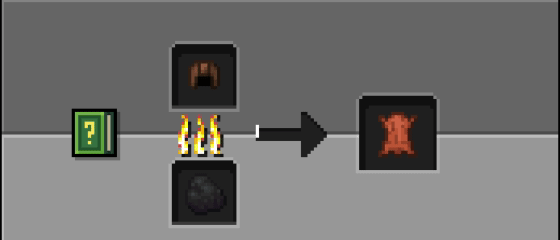
Leather
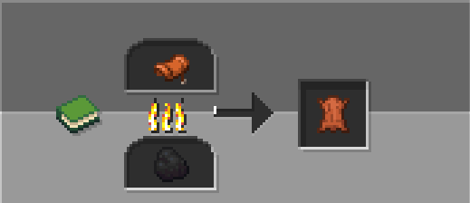
Saddle NEW
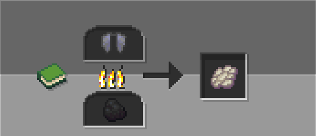
Elytras NEW
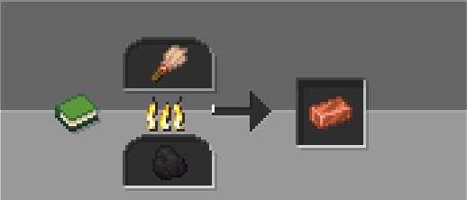
Brush NEW
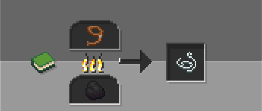
Lead NEW
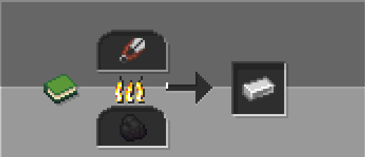
Shears NEW
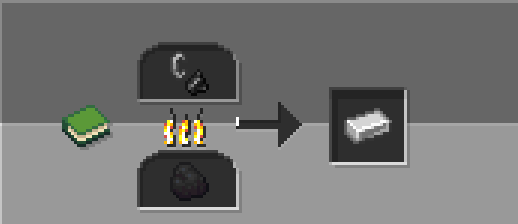
Flint and Steel NEW
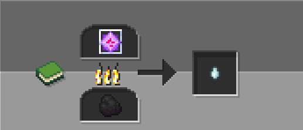
End Crystal NEW
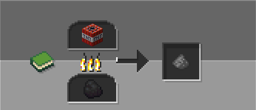
TNT NEW
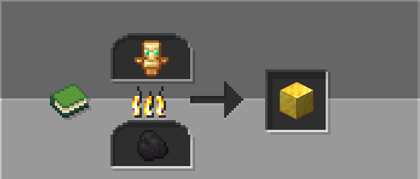
Totem of Undying NEW
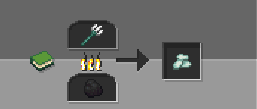
Trident NEW
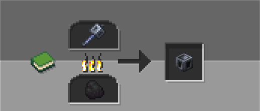
Mace NEW
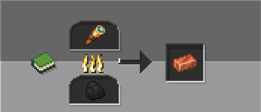
Spyglass NEW
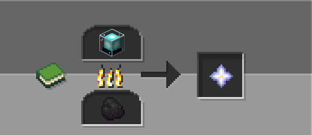
Beacon NEW
Commands
General
Admin
Compatibility
| Version | Status |
|---|---|
| 1.16.x - 26.2.x | ✅ Supported |
| 26.3 snapshots | ✅ Supported |
Installation
1. Download the datapack.
2. Place it inside your world's datapacks folder.
3. Run /reload or restart the world.
4. Have fun!
1. Download the mod.
2. Place it inside your mods folder of your instance.
3. Restart your game.
4. Have fun!
FAQ
Does it work on servers?
Yes, Recycling works on multiplayer servers.
Does it require a resource pack?
No, the datapack works without any resource pack.